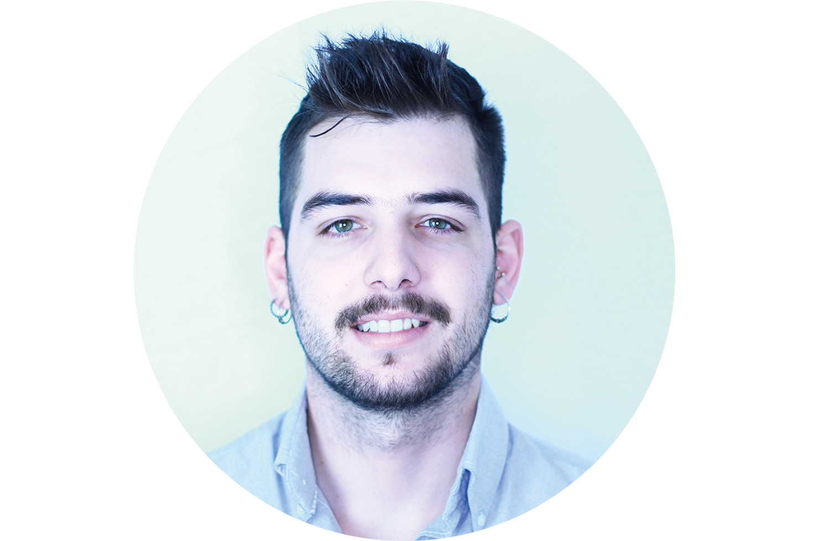
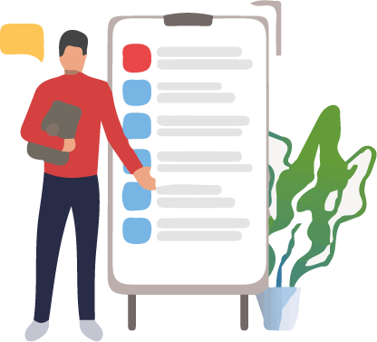

Álvaro
Sánchez-Haro
Sánchez-Haro
FUTURE JAVASCRIPT
FULL-STACK DEVELOPER
PERFIL
Joven, trabajador y dispuesto a retos. Amante de los rompecabezas y de la lógica Entregado con mi trabajo y disputo a retarse a mi mismo. Curioso ante todo.
CONTACTO
640773416
alvaro.amairal@gmail.com
Github:PandaaCode95
Especialidades


Lider
Ocurrente
Trabajador
Experiencia
- 6 Años de experiencia en la hostelería.
Adquiriendo habilidades como el trabajo en equipo y gestionar grupos de trabajo.
- 2 Años como CDO y Co-Fundador de Tactilepay. Gestionando toda la identidad de la empresa, toma de decisiones de la misma.
Preparando desde reuniones con inversiones y conferencias en premios, hasta el desarrollo del producto, contacto con potenciales clientes y por supuesto todo el diseño UX
- Futuro Desarrollador Fullstack en Javascript.
Extra
C1 Ingles A2 Frances Diseño gráfico